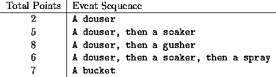

| ``Cheapest'' Scores |
Many games have scores associated with different types of events, and the overall score is just the sum of the these individual event scores. Take, for example, a hypothetical game called Dunking. In this game, you can earn 2 points for a douser and 7 points for a bucket. Immediately after a douser you can score an additional 3 points for a soaker, or an additional 6 points for a gusher. Note that you cannot get points for a soaker or a gusher by themselves. Additionally, immediately following a soaker you can get an additional point for a spray. The table below gives all the scoring possibilities for Dunking:

Note: An event sequence is defined as a number of consecutive scoring events in which all but the first have a prerequisite event. For example, a douser/soaker/spray combination is one event sequence, but three dousers in a row are three separate event sequences.
Given a particular score, what is the smallest number of event sequences which will achieve that score? For Dunking, some scores are impossible (like 1 and 3). Others can be obtained in several ways: to get 8 points you could score one douser/gusher, a douser/soaker/spray and a ``stand-alone" douser, or four dousers. The one douser/gusher is the optimum way to achieve 8 points, since it requires only one ``event sequence."
In this problem you will be presented with the scoring schemes for multiple games, and for each scheme, a set of potential scores to be analyzed. For each game and score, you are to determine if that score can be achieved, and if it can, the optimal manner in which it can be achieved. Optimal, again, means achieving the score with the smallest number of event sequences.
Each game's scoring scheme will begin with a line containing an integer identifying the number of scoring events that are possible for that game. The next N lines will contain the event name (case significant, but no more than 16 characters), the integer score associated with that event, and the name of an event that must immediately precede it in the game, if required. These items will be separated by whitespace (blanks and/or tabs). A value of zero for N marks the end of the input data.
Following each scoring scheme will be a sequence of integers, each giving a potential score. This sequence will terminate with zero, which is not to be treated as a potential score.
For each game/score pair, print a heading line similar to that shown in the output shown below; it includes the game number (starting with 1), a period, the score number (starting with 1 for each game), and the score in parentheses. On the following lines print, with the exact format shown in the Sample Output, the number of each type of scoring event required to obtain the specified score, and the number of points achieved by completing those events (in parentheses), or a message indicating the score is impossible. Display a blank line after the output for each, but last, game/score pair.
5 douser 2 soaker 3 douser spray 1 soaker gusher 6 douser bucket 7 1 2 4 5 6 7 8 9 0 4 foul 0 freeshot 1 foul goal 2 whopper 4 1 2 3 4 5 0 0
Case 1.1 (1):
This score is impossible.
Case 1.2 (2):
1 douser (2)
Case 1.3 (4):
2 dousers (4)
Case 1.4 (5):
1 douser (2)
1 soaker (3)
Case 1.5 (6):
1 douser (2)
1 soaker (3)
1 spray (1)
Case 1.6 (7):
1 bucket (7)
Case 1.7 (8):
1 douser (2)
1 gusher (6)
Case 1.8 (9):
1 douser (2)
1 bucket (7)
Case 2.1 (1):
1 foul (0)
1 freeshot (1)
Case 2.2 (2):
1 goal (2)
Case 2.3 (3):
1 foul (0)
1 freeshot (1)
1 goal (2)
Case 2.4 (4):
1 whopper (4)
Case 2.5 (5):
1 foul (0)
1 freeshot (1)
1 whopper (4)